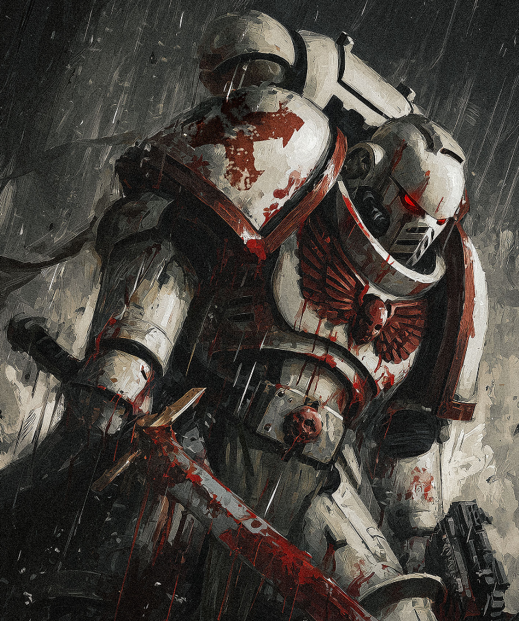

Dossier Astartes Ve Légion
Les White Scars furent la Ve Légion. Une force née pour le mouvement, la vitesse et la frappe soudaine. Là où d’autres légions bâtissaient des murs ou avançaient en lignes parfaites, eux suivaient la guerre comme une chasse.
Leur identité fut scellée lorsque leur Primarque, Jaghatai Khan, fut retrouvé sur Chogoris. Monde de steppes, de clans et de cavaliers, Chogoris forgea en lui une doctrine simple : rester libre, frapper vite, ne jamais laisser l’ennemi imposer son rythme.

LES PREMIERS ÂGES
Sous son commandement, les White Scars devinrent les maîtres de la guerre mobile. Motos, véhicules rapides, assauts éclairs, encerclements brutaux. Ils ne cherchaient pas à tenir le terrain par orgueil. Ils le traversaient comme une lame.
Durant la Grande Croisade, leur autonomie inquiéta parfois les autorités impériales. Ils étaient loyaux, mais difficiles à contrôler. Le Khan n’aimait ni les chaînes, ni les ordres inutiles, ni les stratégies qui transformaient des guerriers en statues.
Lors de l’Hérésie d’Horus, les White Scars furent d’abord entourés de doutes et de manipulations. Mais Jaghatai Khan choisit finalement la loyauté envers l’Empereur. Ce choix ne fut pas celui d’un serviteur docile. Ce fut celui d’un homme libre refusant de s’agenouiller devant le Chaos.
Depuis, les White Scars perpétuent cette tradition. Ils frappent les flancs, brisent les lignes de ravitaillement, détruisent les chefs ennemis puis disparaissent avant que la riposte ne s’organise.
L’UNITÉ PAR LE FER
Il faut comprendre ceci. Les White Scars ne combattent pas comme un mur. Ils combattent comme le vent chargé de lames.
Fin de l’extrait. Toute opération White Scars doit préserver leur autonomie tactique et leur supériorité de mouvement.